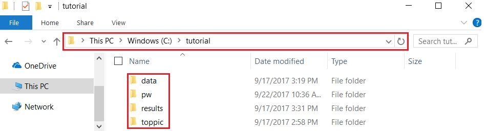
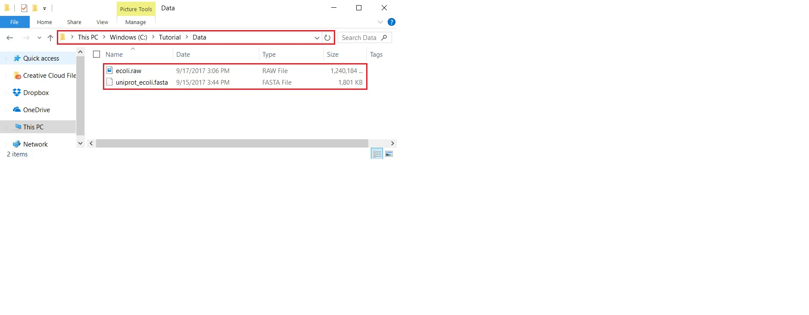
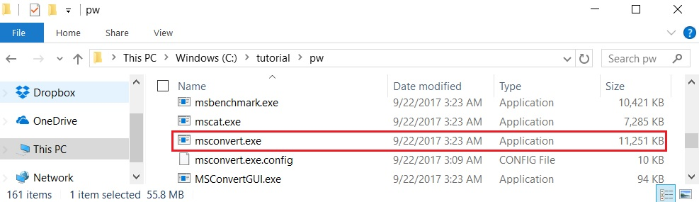

TopPIC Suite
1. Overview
In this tutorial, we use TopPIC to analyze a top-down MS/MS data set of Escherichia coli on a computer with a Windows operating system.2. Folders
Create the folders below for saving software packages and data sets used in this tutorial.
- Create a new folder named 'tutorial' on the C: drive of your system.
- Create a new subfolder named 'pw' in the folder C:\tutorial\ for saving the software package Proteowizard.
- Create a new subfolder named 'toppic' in the folder C:\tutorial\ for saving the software TopPIC suite.
- Create a new subfolder named 'data' in the folder C:\tutorial\ for saving data files.
- Create a new subfolder named 'result' in the folder C:\tutorial\ for saving data files.
The resulting folder structure is shown in the screenshot below.

3. Date set
3.1 Top-down MS/MS date set
The top-down MS/MS data set was generated from protein extract of Escherichia coli K-12 MG1655. The protein extract was analyzed by an RPLC system coupled with an LTQ Orbitrap Velos mass spectrometry. MS1 and MS/MS spectra were collected at a 60,000 resolution with the alternating fragmentation mode. The data set contains 2,027 collision-induced dissociation and 2,027 electron-transfer dissociation top-down MS/MS spectra (see reference [1]).
Click here to download the data set and save it in the folder C:\tutorial\data\.
3.2 Protein sequence database
The Escherichia coli K-12 MG1655 proteome database was downloaded from UniProt on September 14, 2017. It contains 4,309 protein sequences.
Click here to download the protein database and save it in the folder C:\tutorial\data\.
The folder C:\tutorial\data\ is shown in the screenshot below.

4. Software tools
4.1 Msconvert
Msconvert is a software tool in ProteoWizard that converts raw files into various formats.
4.1.1 Required software packages to install ProteoWizard
You must install the following three software packages to use ProteoWizard- Microsoft Visual C++ 2008 SP1 (x86) Redistributable Package
- Microsoft .NET Framework 3.5 SP1
- Microsoft .NET Framework 4.0
4.1.2 Download ProteoWizard
Follow the steps to below download ProteoWizard:
- Go to the link ProteoWizard.
- Choose the download type 'Windows 64-bit tar.bz2' for end users.
- Click the button "I agree to the licensing terms, download ProteoWizard" to download ProteoWizard and save the bz2 file in the folder C:\tutorial\pw\.
- Extract all the files of the downloaded bz2 file to the folder C:\tutorial\pw\.

4.2 TopPIC suite
4.2.1 Download TopPIC suite
- Go to the link to download webpage of TopPIC.
- Choose the download type "Windows 64-bit zip file," fill out the registration form, and click "I agree to the license agreement and download" to download TopPIC suite.
- Save it to the folder C:\tutorial\toppic\.
- Extract all the files of the downloaded zip file to the folder C:\tutorial\toppic\.
5 Data analysis
5.1 File format conversion
We use msconvert to convert the raw file ecoli.raw to an mzML file ecoli.mzML.
5.1.1 File locations
- Executable file:
C:\tutorial\pw\msconvert.exe
- Input raw file:
C:\tutorial\data\ecoli.raw
5.1.2 Command
- Launch the Command Prompt
- Input the following command:
c:\tutorial\pw\msconvert.exe --filter "peakPicking true 1" c:\tutorial\data\ecoli.raw -o c:\tutorial\result
In the above command, the argument --filter "peakPicking true 1-" is used to generate a centroid, not profile, mzML data file, which is needed by the spectral deconvolution tool TopFD. The -o argument specifies the location of the output file.
The screenshot below shows the console output of the above command.
5.1.3 Output file
The resulting output mzML file isC:\tutorial\result\ecoli.mzMLThe size of the file is ??? MB, which can be downloaded here. The running time of the command is about one minute.
5.2 Mass spectral deconvolution
We use TopFD to do mass spectral deconvolution, generating three files containing deconvoluted mass spectra and MS1 features from the mzML file ecoli.mzML.
5.2.1 File locations
- Executable file:
C:\tutorial\toppic\topfd.exe
- Input mzML file:
C:\tutorial\result\ecoli.mzML
5.2.2 Command
In the Command Prompt, input the following command:c:\tutorial\toppic\topfd c:\tutorial\result\ecoli.mzML
The screenshot below shows the console output of the above command.
5.2.3 Output file
TopFD reports three text files.- Msalign file containing deconvoluted MS1 spectra:
C:\tutorial\result\ecoli_ms1.msalign
- Msalign file containing deconvoluted MS/MS spectra:
C:\tutorial\result\ecoli_ms2.msalign
- Text file containing MS1 features of MS/MS spectra:
C:\tutorial\result\ecoli.msft
The three output files can be downloaded here. The running time of the command is about ??? minutes.
5.3 Mass spectral identification by database search
6. Reference
1. Qiang Kou, Likun Xun, and Xiaowen Liu. TopPIC: a software tool for top-down mass spectrometry-based proteoform identification and characterization. Bioinformatics, 32:3495-3497, 2016. Pubmed.